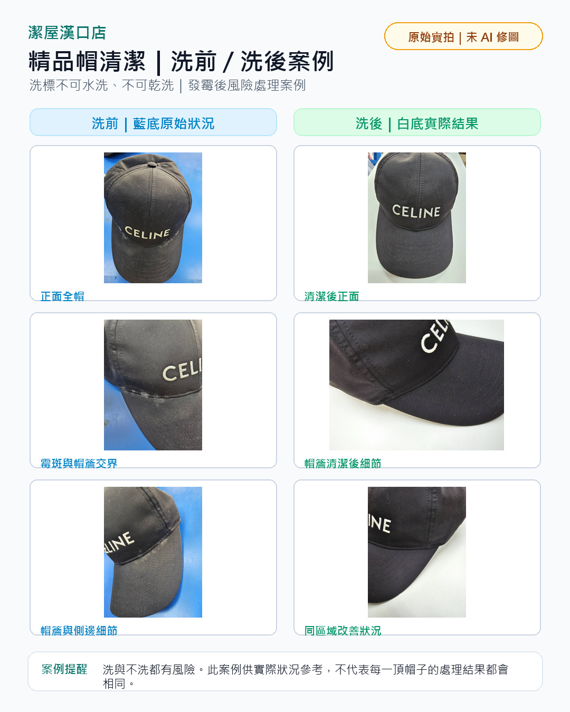

去除汗漬、皮脂
保養方案
基礎清洗
$220
日常清潔、去除汗漬異味
帽子整形
$300
恢復帽身挺度、改善帽型塌陷
完整保養
$450
整形加抗污鍍膜、維持最佳狀態
整形流程
確認材質、結構與變形狀況。
讓纖維結構放鬆。
調整帽身弧度與支撐度。
穩定帽型並做外觀檢查。
送洗前提醒
每頂帽款材質與結構不同，整形效果會依帽況而定。
特殊材質、皮革、紙質纖維、特殊飾件或嚴重老化帽款，需先評估是否適合整形。
建議拍攝正面、側面、帽簷內側與污漬近照，再用 LINE 傳給我們評估。
實際案例
洗標禁止洗滌 + 發霉帽款

此案例為洗標標示不可水洗、不可乾洗的精品帽。客人長期未處理後出現發霉、白化與污染痕跡，在充分告知風險後進行清潔。
洗與不洗都有風險。本案例僅供實際狀況參考，不代表每一頂帽子的處理結果都會相同。
常見問題
帽子整形適合哪些情況？
帽頭塌陷、帽沿彎曲、長期收納變形、清洗後帽型跑掉等情況，都可以先傳照片評估。
帽子清洗與帽子整形價格是多少？
基礎清洗 220 元，帽子整形 300 元，完整保養方案 450 元。特殊材質或嚴重污損會先評估後說明。
可以先用 LINE 傳照片評估嗎？
可以。建議拍攝帽子正面、側面、帽簷內側、汗漬或變形近照。
精品帽、球帽或收藏帽都可以清洗嗎？
可依材質、結構與帽況評估洗護方式。若有皮革、紙質纖維、特殊飾件、脆化或掉色風險，處理前會先告知。